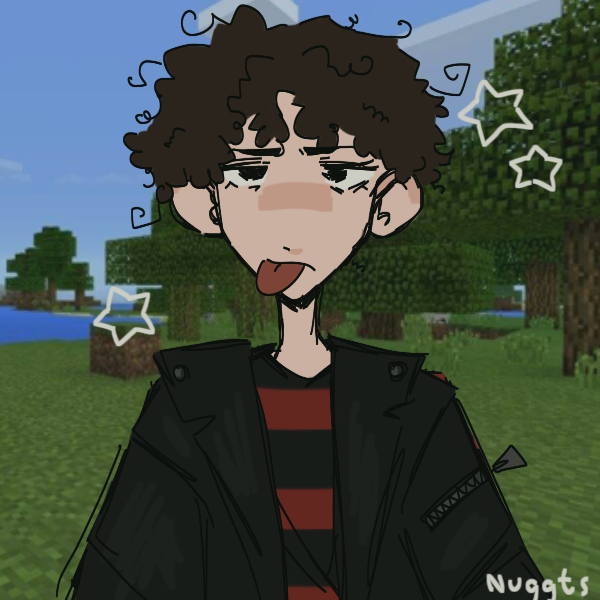

Mateus Rodrigues
Web Developer
GitHubMeus projetos & repositórios Instagram@im_still_alive63 LinkedInConexões profissionais
Web Developer
GitHubMeus projetos & repositórios Instagram@im_still_alive63 LinkedInConexões profissionais